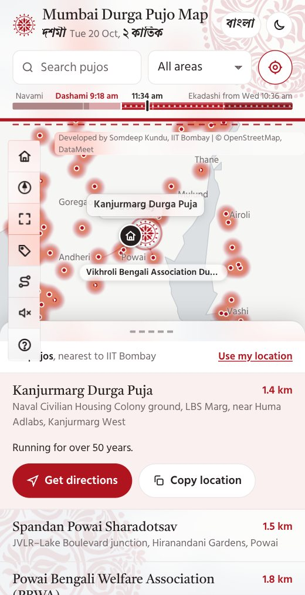
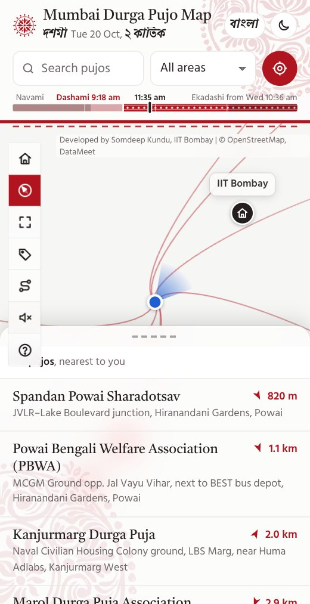
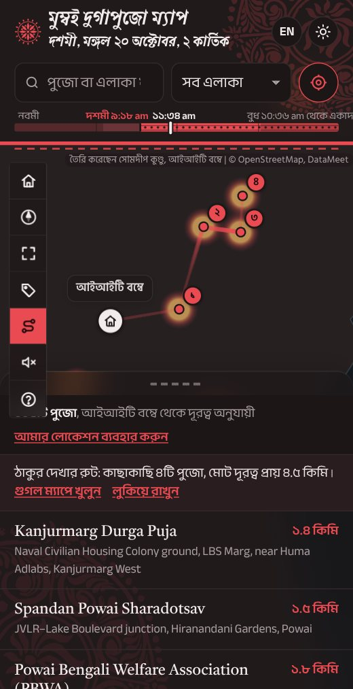
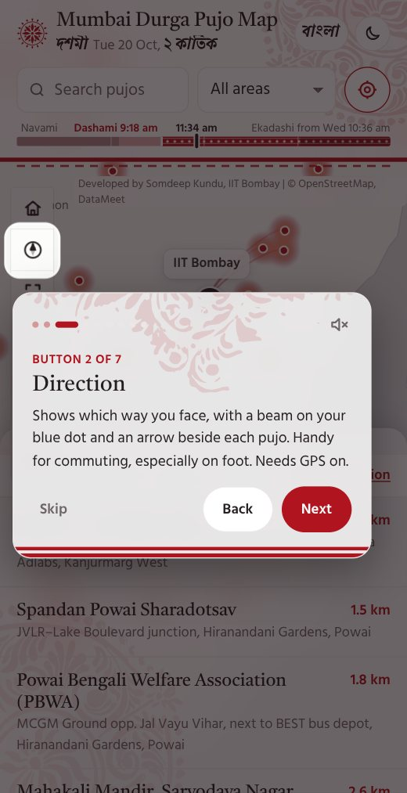

Mumbai Durga Pujo Map
মুম্বাই পুজো পরিক্রমা
115 Durga Pujos across Mumbai, Thane and Navi Mumbai. Nearest first, with a compass and directions.
Open the map → Data (CSV) Data (GeoJSON)
The map in 20 seconds. Sound on for the dhak.




Nearest first
Distances from IIT Bombay, or from you. Directions open in Google Maps for walking or by car, with each pujo's Instagram or Facebook page where it has one.
Names and neighbours
Tap a pujo and the names of its nearest neighbours appear beside it, joined by dotted lines. Or switch on pujo names for the whole map. Dots shrink as you zoom out, so the red glow of the crowded areas stays clear.
Compass for walking
Tap the compass and a beam on your blue dot shows which way you face, with a small arrow beside each pujo pointing the way to walk. Drifting? Draw a figure-8 with your phone. It needs GPS, and asks you to turn it on if it is off.
Your own home
Home is IIT Bombay, since the map began for the Bengali community there. Press and hold Home to make any spot in the region your home, and the distances follow. It is saved on your phone, with a one-tap reset.
A guided tour
A short welcome tour opens on your first visit, in English or Bangla, and the ? button brings it back. On the map-buttons step, Explain each button goes through them one by one. Skip and mute are always on the card.
Pandal-hopping route
The shortest walk through 4 pujos close by, drawn as a calm trail, ready to open in Google Maps.
Highlights
A ✦ marks the oldest and most historic pujos, such as the one running since 1953, and Kumari Puja at Ramakrishna Math. The Highlights button lists just those.
Share a pujo
Share sends a pujo's name, place and a Google Maps link through your phone's own share sheet, to WhatsApp or anyone.
Install it, even offline
Add it to your home screen like an app. After one visit it still opens when the network is patchy between pandals, with the map tiles you have already seen.
Today, by the Bengali calendar
A slim 24-hour strip shows the tithi now and when the next begins, by the traditional Bengali panjika, with sunrise, sunset and the Bengali date, in am and pm. In English and বাংলা.
Light, dark and Bangla
Switch between English and বাংলা, and between light and dark. The whole map, tour and notices follow, and the dhak plays softly unless you mute it.
Open data
All 115 pins are free to download as CSV or GeoJSON, with how each position was found marked as exact, venue or approximate.
Know a missing pujo, a wrong pin or a pujo's Instagram page? Write to somdeepkundu@gmail.com or message me on LinkedIn or Instagram.
Bengali fonts from bangla-fonts. Alpona art by Parama Ghosh, traced from her hand-painted alponas. Dhak sound from this YouTube video.
Made by Somdeep Kundu, a PhD student of IIT Bombay working on Agriculture and Rural Water Management using Earth Observation and bottom-up ground data. Durga Puja 2026 · v1.12.2 · earlier: v1.12.1, v1.12, v1.11.2, v1.11.1, v1.11, v1.10.2, v1.10.1, v1.10, v1.9.3, v1.9.2, v1.9.1, v1.9, v1.8, v1.7, v1.6, v1.5, v1.4, v1.3, v1.2, v1.1, v1